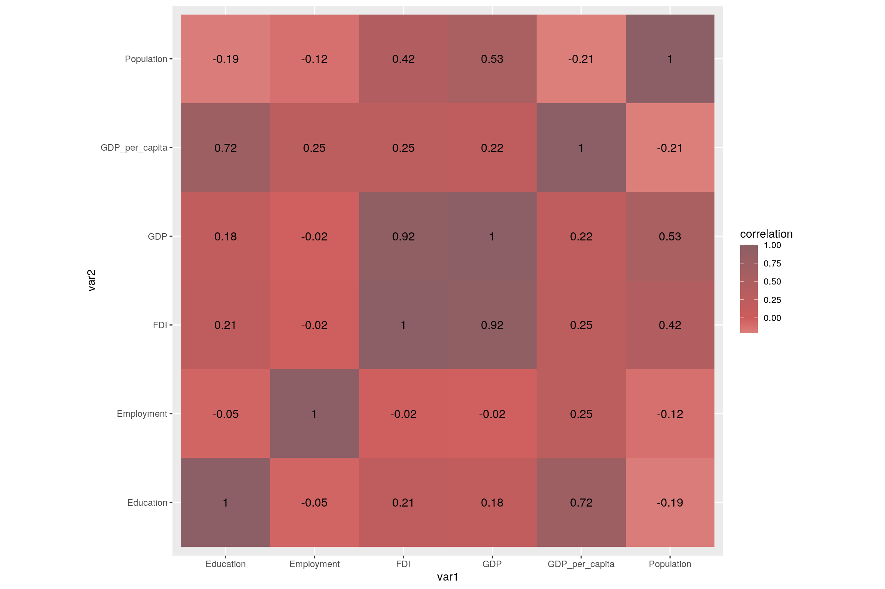
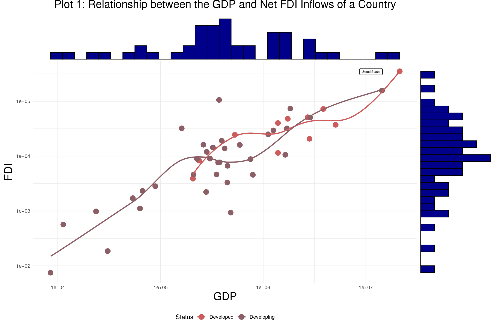
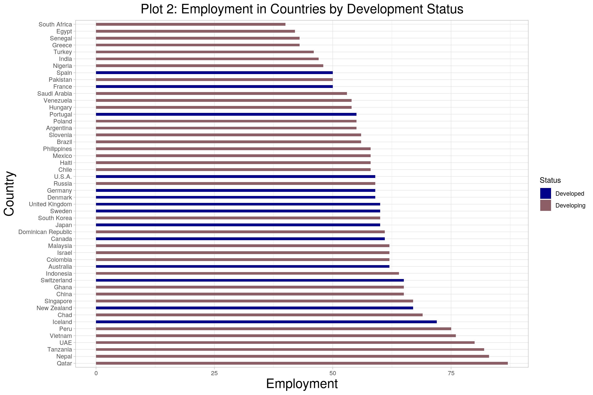
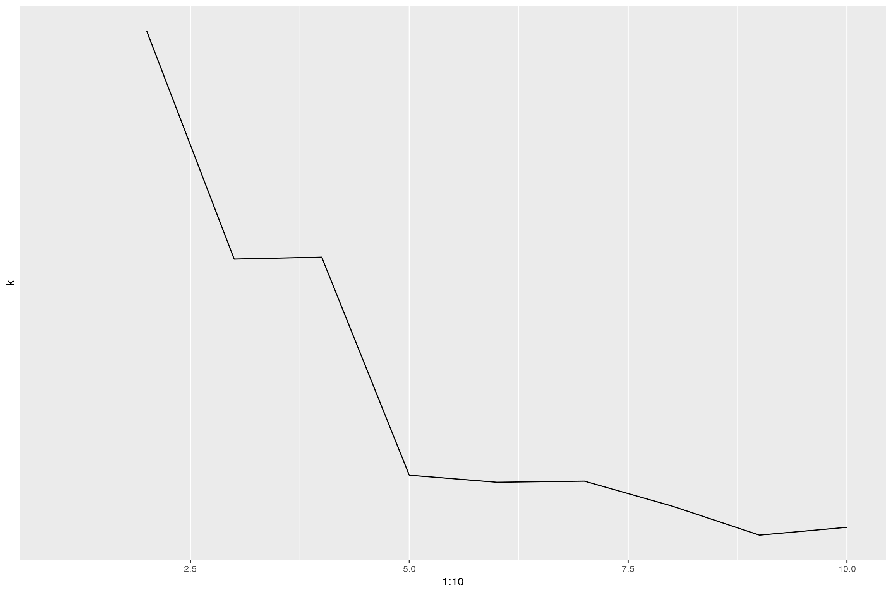
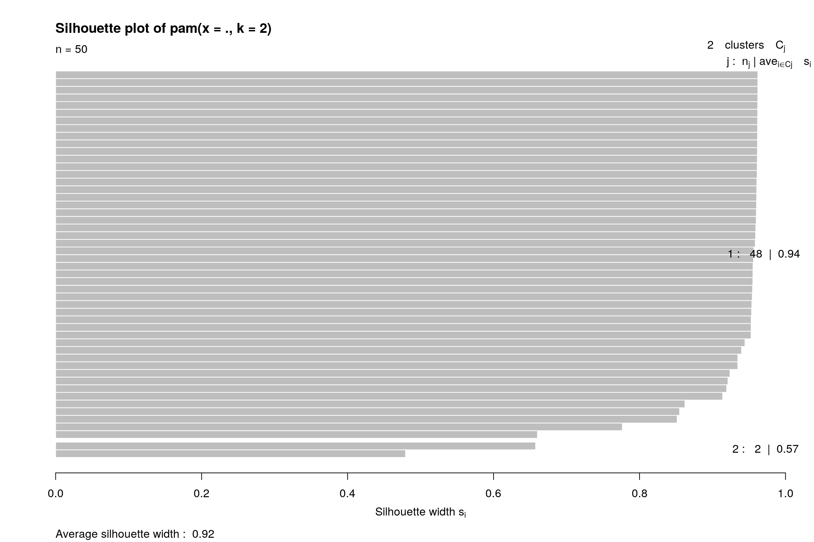
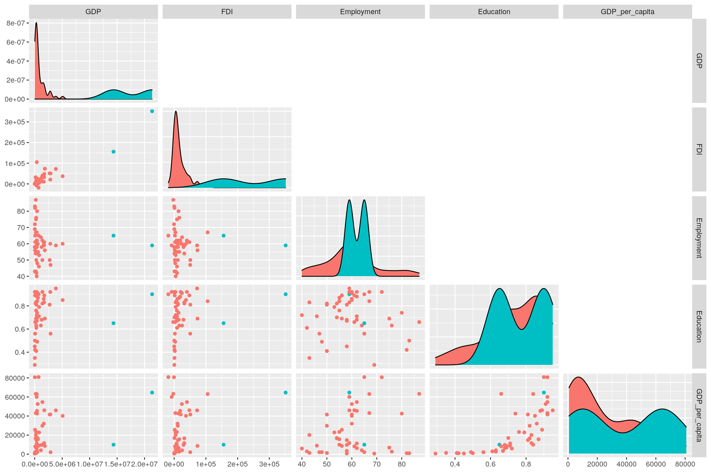

For this project, I combined two different datasets. Dataset 1 consists of 2 categorical variables - Country and Development Status and 3 numerical variables - Literacy, Employment, and GDP (in millions of dollars). This dataset was obtained from the World Bank. Dataset 2 consists of 1 categorical variable - Country, and 2 numerical variables - Net FDI Inflows (in millions of dollars) and population of the country (in millions).It was obtained from the International Labor Organization. Both datasets have 50 observations.I chose these datasets because I found a lack of research on foreign direct investments in the global market and the indicators that affect FDI. I expect there to be a positive and direct relationship between FDI and GDP as well as GDP and employment of the country.
GDP is the gross domestic product of each country and will be measured in millions of dollars. The development status is decided by various indicators chosen by the UN and World Bank and will act as a categorical variable with two distinct values - developed and developing Net FDI Inflow is the different between the money that is leaving the country and money that is entering the country. This variable will also be measured in millions of dollars. Employment is the percentage of employed people against the total population eligible to work. Education is the literacy rate of each country. The country name will be our joint variable between the datasets.
library(tidyverse)
D1 <- read_csv("SDS328 Project 1 Data 1.csv")
D2 <- read_csv("SDS Project 1 Data 3.csv")
Dataset <- left_join(D1, D2)
head(Dataset)## # A tibble: 6 x 7
## Country GDP Education Employment Status Population FDI
## <chr> <dbl> <dbl> <dbl> <chr> <dbl> <dbl>
## 1 Argentina 449663. 0.84 55 Developing 45.2 6663.
## 2 Australia 1392681. 0.92 62 Developed 25.5 40075.
## 3 Brazil 1839758. 0.69 56 Developing 213. 73504.
## 4 Canada 1736426. 0.89 61 Developed 37.7 47845.
## 5 Chad 11315. 0.290 69 Developing 16.4 567.
## 6 Chile 282318. 0.81 58 Developing 19.1 11928.I used the left_join function because I did not have any preference on the order of my variables. Also, Dataset 1 had the majority of my variables and I wanted Dataset 2 to align according to it. No rows were removed nor were any NA values added.
Since my data was already tidy, I decided to rearrange it and then tidy it back.
dataset.long <- Dataset %>% pivot_longer(c(2:4), names_to = "Variable",
values_to = "Values")
dataset.long## # A tibble: 150 x 6
## Country Status Population FDI Variable Values
## <chr> <chr> <dbl> <dbl> <chr> <dbl>
## 1 Argentina Developing 45.2 6663. GDP 449663.
## 2 Argentina Developing 45.2 6663. Education 0.84
## 3 Argentina Developing 45.2 6663. Employment 55
## 4 Australia Developed 25.5 40075. GDP 1392681.
## 5 Australia Developed 25.5 40075. Education 0.92
## 6 Australia Developed 25.5 40075. Employment 62
## 7 Brazil Developing 213. 73504. GDP 1839758.
## 8 Brazil Developing 213. 73504. Education 0.69
## 9 Brazil Developing 213. 73504. Employment 56
## 10 Canada Developed 37.7 47845. GDP 1736426.
## # … with 140 more rowsdataset.long %>% pivot_wider(names_from = "Variable", values_from = "Values")## # A tibble: 50 x 7
## Country Status Population FDI GDP Education Employment
## <chr> <chr> <dbl> <dbl> <dbl> <dbl> <dbl>
## 1 Argentina Developing 45.2 6663. 449663. 0.84 55
## 2 Australia Developed 25.5 40075. 1392681. 0.92 62
## 3 Brazil Developing 213. 73504. 1839758. 0.69 56
## 4 Canada Developed 37.7 47845. 1736426. 0.89 61
## 5 Chad Developing 16.4 567. 11315. 0.290 69
## 6 Chile Developing 19.1 11928. 282318. 0.81 58
## 7 China Developing 1439. 155815. 14342903. 0.65 65
## 8 Colombia Developing 50.9 14314. 323803. 0.68 62
## 9 Qatar Developing 2.9 -2813. 183466. 0.66 87
## 10 Denmark Developed 5.8 -7837. 348078. 0.92 59
## # … with 40 more rowslibrary(kableExtra)
Dataset %>% filter(GDP == max(GDP)) %>% kbl(caption = "Table 1: Statistics for Highest GDP") %>%
kable_classic(full_width = T, html_font = "Cambria")| Country | GDP | Education | Employment | Status | Population | FDI |
|---|---|---|---|---|---|---|
| U.S.A. | 21374419 | 0.9 | 59 | Developed | 331 | 351631 |
Dataset %>% filter(GDP == min(GDP)) %>% kbl(caption = "Table 2: Statistics for Lowest GDP") %>%
kable_classic(full_width = T, html_font = "Cambria")| Country | GDP | Education | Employment | Status | Population | FDI |
|---|---|---|---|---|---|---|
| Haiti | 8498.98 | 0.45 | 58 | Developing | 11.4 | 75 |
Dataset <- Dataset %>% mutate(GDP_per_capita = GDP/Population)
Dataset %>% filter(GDP_per_capita == max(GDP_per_capita)) %>%
kbl(caption = "Table 3: Statistics for Highest GDP per Capita") %>%
kable_classic(full_width = T, html_font = "Cambria")| Country | GDP | Education | Employment | Status | Population | FDI | GDP_per_capita |
|---|---|---|---|---|---|---|---|
| Switzerland | 703082.4 | 0.9 | 65 | Developed | 8.7 | -18382.53 | 80814.07 |
Dataset %>% filter(GDP_per_capita == min(GDP_per_capita)) %>%
kbl(caption = "Table 4: Statistics for Lowest GDP per Capita") %>%
kable_classic(full_width = T, html_font = "Cambria")| Country | GDP | Education | Employment | Status | Population | FDI | GDP_per_capita |
|---|---|---|---|---|---|---|---|
| Chad | 11314.95 | 0.29 | 69 | Developing | 16.4 | 566.64 | 689.936 |
Dataset <- Dataset %>% arrange(desc(GDP_per_capita))
Dataset %>% filter(GDP > mean(GDP)) %>% select(Country, GDP,
Employment) %>% arrange(Employment) %>% kbl(caption = "Table 5: Employment for 10 Countries with Highest GDP") %>%
kable_classic(full_width = T, html_font = "Cambria") %>%
row_spec(4, bold = T, color = "black", background = "green") %>%
row_spec(11, bold = T, color = "black", background = "grey")| Country | GDP | Employment |
|---|---|---|
| India | 2875142 | 47 |
| France | 2715518 | 50 |
| Brazil | 1839758 | 56 |
| U.S.A. | 21374419 | 59 |
| Germany | 3845630 | 59 |
| Russia | 1699877 | 59 |
| United Kingdom | 2827113 | 60 |
| Japan | 5081770 | 60 |
| South Korea | 1642383 | 60 |
| Canada | 1736426 | 61 |
| China | 14342903 | 65 |
Summarizing the tables:
Using the filter function, we can see that the United States and Haiti have the highest and lowest standards of living according to GDP. However, population can play a major role in this, meaning GDP is not always the accurate indicator of standard of living. For example, population of 10 people that earn 10,000 dollars will have the same GDP as a population of 10,000 people making 10 dollars. Therefore, we will create a new variable ‘GDP per capita’ by dividing the GDP by the population. Now we can see that it is actually Switzerland and Chad who have the highest and lowest standards of living respectively. In the last table, we analyse if employment is the only variable that controls GDP. If this was true, we would expect the country with the highest employment to have the highest GDP. However, this is not the case. We can see that while USA has the highest GDP, China has the highest employment. Hence, there must be other factors controlling the GDP variable. We will explore this more through a graphical representation later on.
library(kableExtra)
s1 <- Dataset %>% summarize_if(is.numeric, mean) %>% t()
s2 <- Dataset %>% summarize_if(is.numeric, sd) %>% t()
s3 <- Dataset %>% summarize_if(is.numeric, min) %>% t()
s4 <- Dataset %>% summarize_if(is.numeric, max) %>% t()
s5 <- Dataset %>% summarize_if(is.numeric, IQR) %>% t()
s1 <- s1 %>% as.data.frame %>% rownames_to_column("Variables") %>%
rename(mean = V1)
s2 <- s2 %>% as.data.frame %>% rownames_to_column("Var") %>%
rename(sd = V1)
s3 <- s3 %>% as.data.frame %>% rownames_to_column("Var") %>%
rename(min = V1)
s4 <- s4 %>% as.data.frame %>% rownames_to_column("Var") %>%
rename(max = V1)
s5 <- s5 %>% as.data.frame %>% rownames_to_column("Var") %>%
rename(IQR = V1)
Summary <- cbind(s1, s2, s3, s4, s5)
Summary <- Summary %>% as.data.frame %>% select(-Var)
Summary %>% kbl(caption = "Table 6: Summary Statistics of Numeric Variables") %>%
kable_classic(full_width = F, html_font = "Cambria")| Variables | mean | sd | min | max | IQR |
|---|---|---|---|---|---|
| GDP | 1511487.5692 | 3.602599e+06 | 8498.980 | 21374418.88 | 1144980.540 |
| Education | 0.7302 | 1.671427e-01 | 0.290 | 0.95 | 0.215 |
| Employment | 59.8400 | 1.051017e+01 | 40.000 | 87.00 | 10.500 |
| Population | 116.8372 | 2.766796e+02 | 0.300 | 1439.30 | 83.535 |
| FDI | 26466.2734 | 5.574868e+04 | -18382.530 | 351631.00 | 25811.627 |
| GDP_per_capita | 24142.2277 | 2.323628e+04 | 689.936 | 80814.07 | 37763.161 |
Dataset %>% group_by(Status) %>% summarize_if(is.numeric, mean) %>%
rename(`Mean By Status` = "Status") %>% kbl(caption = "Table 7: Mean of Numeric Variables by Development Status") %>%
kable_classic(full_width = F, html_font = "Cambria")| Mean By Status | GDP | Education | Employment | Population | FDI | GDP_per_capita |
|---|---|---|---|---|---|---|
| Developed | 3029890.6 | 0.885 | 59.92857 | 58.87857 | 45853.57 | 50343.00 |
| Developing | 920997.5 | 0.670 | 59.80556 | 139.37667 | 18926.77 | 13953.04 |
Dataset %>% group_by(Status) %>% summarize_if(is.numeric, min) %>%
rename(`Minimum Value by Status` = "Status") %>% kbl(caption = "Table 8: Minimum Values of Numeric Variables by Development Status") %>%
kable_classic(full_width = F, html_font = "Cambria")| Minimum Value by Status | GDP | Education | Employment | Population | FDI | GDP_per_capita |
|---|---|---|---|---|---|---|
| Developed | 24188.04 | 0.76 | 50 | 0.3 | -18382.53 | 23302.557 |
| Developing | 8498.98 | 0.29 | 40 | 2.1 | -2812.64 | 689.936 |
Dataset %>% group_by(Status) %>% summarize_if(is.numeric, max) %>%
rename(`Maximum Value by Status` = "Status") %>% kbl(caption = "Table 9: Maximum Value of Numeric Variables by Development") %>%
kable_classic(full_width = F, html_font = "Cambria")| Maximum Value by Status | GDP | Education | Employment | Population | FDI | GDP_per_capita |
|---|---|---|---|---|---|---|
| Developed | 21374419 | 0.95 | 72 | 331.0 | 351631.0 | 80814.07 |
| Developing | 14342903 | 0.89 | 87 | 1439.3 | 155815.3 | 63264.21 |
Summarizing the tables:
Table 6 summarizes the statistics of all numeric variables regardless of their categorical classification. We can see the spread, max and min values, and quantile ranges throughout the dataset. To analyze the effect of the development status of the country on these summary statistics, we grouped them accordingly in Table 7,8, and 9. By comparing the minimum values of the developed group and the maximum values of the developing group, we can try to see if there is some set limit that seperates the two groups. The max GDP per capita of the highest developing country is 2.71 times higher than the min GDP per capita in the developed group. Similarly, max employment in the developing group is 87, while the min employment is only 50 in the developed group. Therefore, we can conclude that a single variable does not control the status of a country, instead it is more likely a mix of all.
Using the correlation matrix, we can determine how each numeric variable relates to one other. These correlations have been displayed in both a tabular and graphic form below.
## GDP Education Employment Population FDI
## GDP 1.00000000 0.17820588 -0.02249183 0.5333389 0.92416133
## Education 0.17820588 1.00000000 -0.05202709 -0.1895795 0.21091449
## Employment -0.02249183 -0.05202709 1.00000000 -0.1197990 -0.01535499
## Population 0.53333893 -0.18957948 -0.11979905 1.0000000 0.41796647
## FDI 0.92416133 0.21091449 -0.01535499 0.4179665 1.00000000
## GDP_per_capita 0.21601900 0.71662608 0.25137299 -0.2077991 0.25235633
## GDP_per_capita
## GDP 0.2160190
## Education 0.7166261
## Employment 0.2513730
## Population -0.2077991
## FDI 0.2523563
## GDP_per_capita 1.0000000## # A tibble: 36 x 3
## var1 var2 correlation
## <chr> <chr> <dbl>
## 1 GDP GDP 1
## 2 GDP Education 0.178
## 3 GDP Employment -0.0225
## 4 GDP Population 0.533
## 5 GDP FDI 0.924
## 6 GDP GDP_per_capita 0.216
## 7 Education GDP 0.178
## 8 Education Education 1
## 9 Education Employment -0.0520
## 10 Education Population -0.190
## # … with 26 more rows
Plot 1: According to the heatmap above, we see the highest correlation between GDP and FDI at 0.92 as well as GDP per capita and Education at 0.72. Another important correlation to note is that between population and GDP, and population and GDP per capita. As we noted in our summary statistics as well, a high GDP does not necessarily mean a high GDP per capita and the popoulation acts as the deciding factor. Hence, it is not surprisngly that while population and GDP have a positive correlation, population and GDP per capita have a negative correlation.

Plot 2: In the above plot, we have total GDP of the country on the x-axis and the net FDI on the y-axis. The histograms in dark blue display the distribution of each variable. I wanted to test if the gross domestic product of a country and if that has an effect on how foreign investors value it. I also wanted to see if the development status can increase or decrease its appeal for foreign investments. As predicted in the introduction, there is a direct and positive relationship between FDI and GDP. The data was transformed to log form to accommodate for the large numbers.Surprisingly, development status did not have a significant effect on how investors viewed the potential of each country. There is an even increase in FDI with increase in GDP for all countries, regardless of development status. The country with the highest GDP and FDI has been labelled. In order to further ensure the data was normally distributed, a histogram has been imposed on the scatterplot. Both variables seem to be mostly evenly distributed.

Plot 3: In the above plot, we have the sample countries on the y-axis and the rate of employment on the x-axis. The bars have been distinguished based on whether the county is developed or developing. I wanted to test if an increase in employment opportunities can further the development status. Based on the hypothesis that it does, all countries towards the end of the graph with the highest employment rates, should have been filled in with dark green to indicate fully developed status. Surprisingly, this was not the case. Developed countries were spread pretty evenly throughout the graph and developed countries took up both sides of the extremes. This observation should prompt further research into how the types of employment offered in each country and other factors affect it. As we studied in the summary statistics above, neither the United States (highest GDP) nor Switzerland(highest GDP per capita) have the highest employment rates.
library(cluster)
library(GGally)
kmeans5 <- Dataset %>% select_if(is.numeric)
sil_width <- vector()
for (i in 2:10) {
kms <- kmeans(kmeans5, centers = i)
sil <- silhouette(kms$cluster, dist(kmeans5))
sil_width[i] <- mean(sil[, 3])
}
ggplot() + geom_line(aes(x = 1:10, y = sil_width)) + scale_y_continuous(name = "k",
breaks = 1:10)
pam1 <- kmeans5 %>% pam(2)
pam1## Medoids:
## ID GDP Education Employment Population FDI GDP_per_capita
## [1,] 28 364701.5 0.71 62 32.4 7650.47 11256.220
## [2,] 29 14342902.8 0.65 65 1439.3 155815.34 9965.193
## Clustering vector:
## [1] 1 1 2 1 1 1 1 1 1 1 1 1 1 1 1 1 1 1 1 1 1 1 1 1 1 1 1 1 2 1 1 1 1 1 1 1 1 1
## [39] 1 1 1 1 1 1 1 1 1 1 1 1
## Objective function:
## build swap
## 763573.6 763165.5
##
## Available components:
## [1] "medoids" "id.med" "clustering" "objective" "isolation"
## [6] "clusinfo" "silinfo" "diss" "call" "data"pam1$silinfo$avg.width## [1] 0.9226429plot(pam1, which = 2)
kmeans5 %>% mutate(cluster = as.factor(pam1$clustering)) %>%
ggpairs(columns = c("GDP", "FDI", "Employment", "Education",
"GDP_per_capita"), upper = NULL, aes(color = cluster)) Based on our plot for kmeans from 1 to 10, we can see that the average silhouette width is highest at 2 clusters. Using this number for PAM, we get an average width of 0.92 implying a strong structure. The silhouette plot further confirms this.